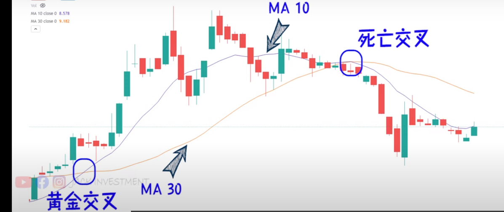
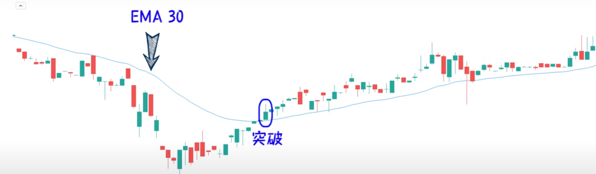
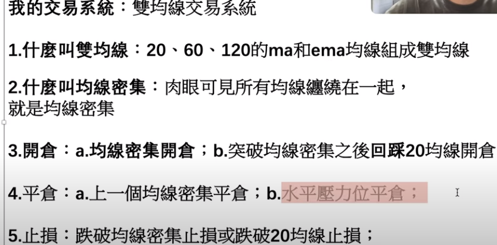
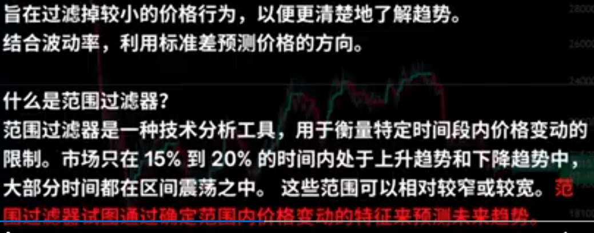

MA 和 EMA的差别
计算方式不同: Ma 是简单移动平均,每个时期的平均值是将该时期的值与之前几个时期的值进行算术平均。
EMA 是指数移动平均,每个时期的平均值是将该时期的值按一定权重与之前时期EMA的加权平均。EMA对最近时期赋予更高权重。
对最新变化的敏感度不同: Ma 对最新数据变化的反应较慢,新数据点对平均线的影响力较小。
EMA 对最新数据变化更敏感,新数据点对平均线的影响力较大。
平滑程度不同: Ma 的平滑程度较低,曲线较为粗糙。
EMA 的平滑程度较高,曲线更为平滑。
延迟效应不同: Ma 延迟效应小,能更快反映最近几个时期的数据变化。
EMA 延迟效应较大,反映最近变化会有一定滞后。
使用场景不同: Ma 更适合分析长期趋势性变化。
EMA 更适合分析短期的数据变动。
总体来说,EMA 对最近数据变化更敏感,但也带来了更高的平滑性和延迟效应。选择哪种移动平均要根据分析需求来决定。

死亡交叉(Death Cross)是技术分析中的一个重要信号,主要用于判断股票或指数趋势反转的时机。
它的定义是:
当短期移动平均线从上向下切穿长期移动平均线时,产生死亡交叉,这预示着股价可能从上涨趋势转为下跌趋势。
其中,短期移动平均线通常选择5日线或10日线,长期移动平均线一般选择20日线或30日线。
死亡交叉的主要判断标准包括:
短期均线从上向下切穿长期均线
交叉时,两条均线都处于股票的上涨趋势中
交叉后,股价确认下跌
成交量放大,说明跌势得到确认
当死亡交叉出现时,表示股价上涨趋势已经结束,应及时卖出股票或指数ETF以避免损失。
死亡交叉是技术分析中一个重要的趋势反转信号,但也不绝对可靠,需要结合更多因素进行综合判断。投资者不应仅凭死亡交叉进行买卖决策。
EMA 和 支撑位

EMA 30 跌破的时候 就要想办法离场
双均线交易系统
ma 和 ema
均线密集
均线密集(Line Cluster)和双均线交易(Two Line Trading)都是基于移动平均线的交易策略。
均线密集是指短期均线和长期均线之间的距离非常接近,两条均线基本重合在一起。这通常表示股价处于区间整理状态,可能预示着新的趋势的来临。
双均线交易则是利用两条不同周期的移动平均线进行交易:
当短期均线上穿长期均线时,视为买入信号 当短期均线下穿长期均线时,视为卖出信号 具体操作步骤是:
确定两条均线,例如5日线和10日线
当5日线上穿10日线时买入
当5日线下穿10日线时卖出
每次产生新信号就执行新操作
双均线交易属于趋势跟踪策略,通过双均线的金叉死叉来捕捉趋势的变化,实现低买高卖。
两种策略都利用了移动平均线的优势,可以过滤市场噪音,识别趋势。但也存在时间滞后等问题。需结合其他技术指标使用,并控制好风险。
如何狙击散户
散户做空的更多,我们做多
双均线交易系统

两个概念:
- 金叉 (黄金交叉), 短期均线从下向上切穿长期均线
- 死叉, 短期均线从上向下切穿长期均线
金叉买入,死叉果断卖出, 不要犹豫,既然相信这套理论,就要坚守住 。
trading view 监控金叉和死叉信号,并且通知量化机器人自动买入
https://zhuanlan.zhihu.com/p/575172008
本期我们来探讨一个来源于油管的「神奇的双EMA均线策略」（投机实验室），这个策略被称为“股票和crypto currency市场杀手”。小编我观看视频了解到这个策略是一个trading view的pine语言策略，用到了2个trading view指标。看到视频中的回测效果非常好，FMZ也支持Trading View的Pine语言，所以就忍不住想要自己回测、测试分析。那么就开始整活！这就动手把视频中的策略复刻下来。
1、EMA指标
为了简便设计，我们就不使用视频上列举的Moving Average Exponential。我们使用trading view的内置ta.ema代替（其实都一样）。
2、VuManChu Swing Free指标
这个是一个Trading View上的指标，我们需要去Trading View上把源码扒下来。
EMA指标：策略使用两根EMA均线，一根快线（小周期参数），一根慢线（大周期参数）。双EMA均线的作用主要是帮助我们判断市场趋势方向。
多头排列 快线在慢线上方。 空头排列 快线在慢线下方。 VuManChu Swing Free指标：VuManChu Swing Free指标用来发出信号，再结合其它条件判断是否进行下单交易。从VuManChu Swing Free指标源码可以看出：longCondition变量就代表买入信号，shortCondition变量就代表卖出信号。后续编写下单条件就使用这两个变量。
VuManChu 摆动交易指标是一个范围过滤器，测量特定时间段内的价格范围和变化，以确定上涨或下跌趋势。具有自动化的买入和卖出交易信号。该指标具有范围过滤器本身、向上和向下指标、高低波段和多头/空头入场指标。 07:22 VuManChu Swing Free 实战策略
